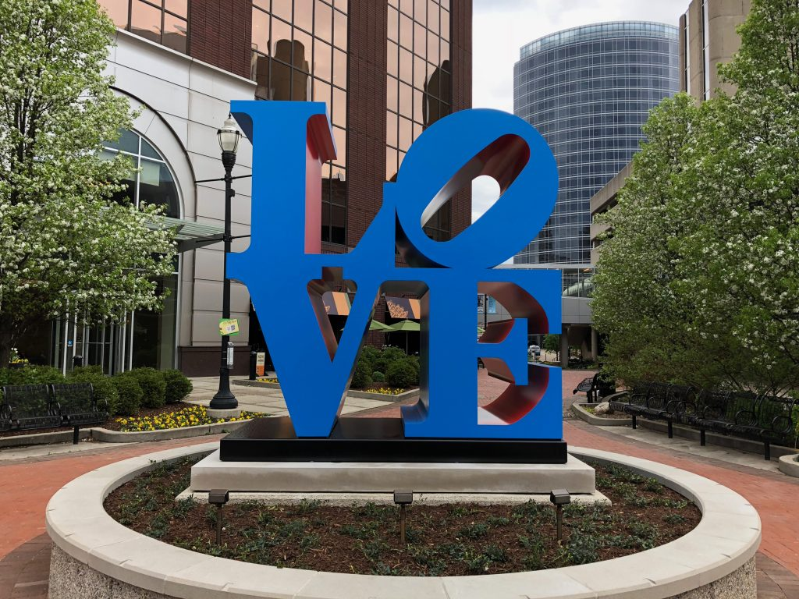
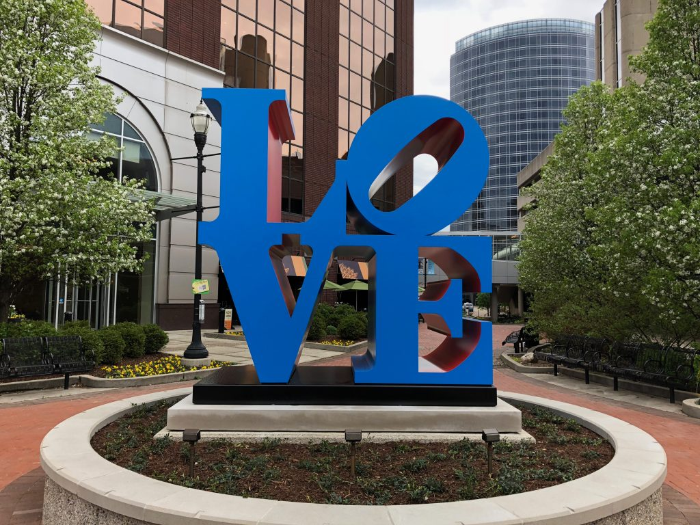

Welcome to Visit Grand Rapids!
Hello, fellow explorers! I'm Ellie, a proud resident of Grand Rapids for
the past two decades. I've witnessed this city's evolution, and I am
thrilled to share my love for it through "Visit Grand Rapids," a curated
guide to the heartbeat of West Michigan.
This website is a passion project born out of my deep affection for the
diverse and dynamic offerings this city provides. Grand Rapids isn't
just a place; it's an experience, and I want to be your guide to the
best this city has to offer.
Why Visit Grand Rapids?
Grand Rapids is more than just a dot on the map; it's a destination brimming with life, culture, and endless possibilities. Through this platform, I aim to be your virtual companion on a journey through the hidden gems and well-loved spaces that make Grand Rapids truly unique.
What to Expect?
Whether you're a local seeking a new adventure or a visitor eager to explore, Visit Grand Rapids is your go-to resource for discovering fantastic restaurants, charming parks, comfortable stays, and a myriad of activities suitable for every season. From the vibrant energy of downtown to the tranquility of our green spaces, there's something here for everyone.
Join the Adventure!
Come along on this digital expedition as we uncover the soul of Grand
Rapids. Let's explore the flavors of its diverse culinary scene, find
solace in its parks, discover cozy places to stay, and revel in the
countless activities that make every day in Grand Rapids an adventure.
Thank you for visiting, and I hope this website becomes your trusted
companion as you navigate the wonders of Grand Rapids!
A Culinary Journey
Grand Rapids is a haven for food enthusiasts, boasting a culinary scene that caters to every palate. From cozy cafes to upscale dining, the city's restaurants are a reflection of its diverse and welcoming community.
Parks and Recreation
The parks in Grand Rapids are more than just green spaces; they are the beating heart of the city. Whether you seek tranquility, outdoor adventures, or a simple picnic, our parks offer a well-rounded experience for nature lovers and families alike.
Places to Stay
Whether you're here for a weekend getaway or an extended stay, I've handpicked accommodations that embody the warmth and hospitality that Grand Rapids is known for. Comfortable, unique, and centrally located, these places will make your stay as memorable as the city itself.
Discover Grand Rapids with Visit Grand Rapids
As a local with a deep love for this city, I invite you to explore Grand
Rapids through my eyes. Visit Grand Rapids is a labor of love, a
dedication to showcasing the best this city has to offer. Join me on a
journey of discovery, and let Grand Rapids capture your heart as it has
captured mine.
Thank you for visiting, and may your time in Grand Rapids be filled with
joy, adventure, and unforgettable moments.